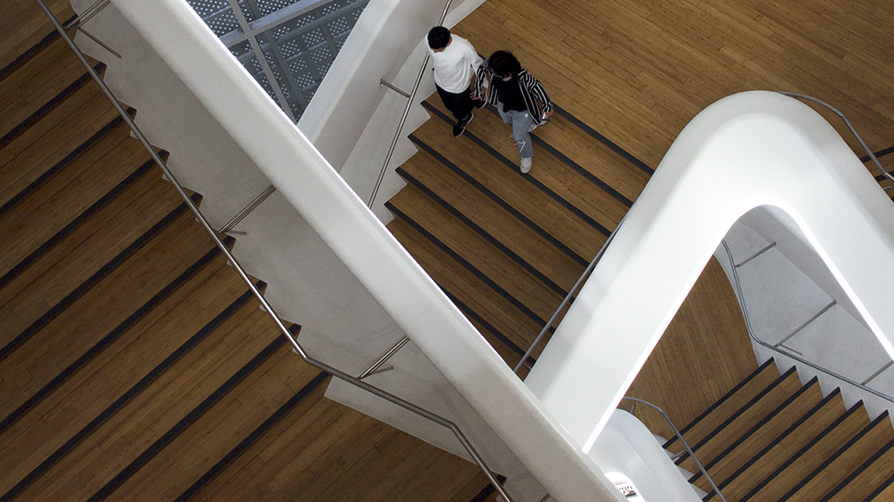

September 2021
The labyrinth of staircases found within the Dongdaemun Design Plaza during my visit to Seoul, South Korea in 2018.
In November 2019, I began looking for opportunities to work in-house as a medical animator within the medical visualization field. For three years up until then, I freelanced as a Medical Media Designer for Hologic and Perimeter Medical Imaging AI, working closely with teams and executives to produce visuals that were key to advancing their products to market. These were experiences through which I grew and am thankful for, but reached the inevitable stage where I wanted to make a lateral career move.
By February 2020, I had progressed through interviews for five of the 40 places I had applied to or contacted, most of which were based in the States. Only some were medical animator positions, while others were science/technical animator or illustrator positions. I was unsatisfied, not because I hadn’t secured offers, but rather the lack of in-house openings within medical visualization. I learned the field was far more niche than expected, with many working for themselves by forming a studio or freelancing. While I was, and continue to be, passionate about medical visualization, I was certainly not tied to it. I switched my focus to UX as it encompassed attributes I look for in a job, like applying my background in science and design, working in a multidisciplinary environment, and most importantly the satisfaction of adding value directly to people’s lives through my work. Also, much of my freelance work shared parallels with UX design, which made this transition all the more natural.
Then it happened - COVID-19. I was looking to enroll into a UX course but offerings were suspended indefinitely. That didn’t stop me from exploring the plethora of online resources like Lynda.com (now LinkedIn Learning), which is freely accessible through a valid public library card. With the world on pause, I used the downtime to accelerate my transition into UX. I completed the learning path titled, Become a User Experience Designer, through which I reinforced my knowledge of the UX techniques, in addition to reading staples like The Design of Everyday Things by Don Norman, Don’t Make Me Think by Steve Krug, and Susan Weinschenk’s 100 Things Every Designer Needs to Know About People. I came up with two case studies to put my learning to practice, EquiPPE and Savery. Over seven months, I saw through both projects from research to testing, and all the design challenges in between. For Savery, I collaborated with a friend I met through Brooklyn Product Design’s Slack group, adding a teamwork dynamic that I appreciated after having worked on EquiPPE independently. During this time, I also picked up on HTML and CSS, and coded this portfolio as my first web project to demonstrate my learning.
This intensive learning phase took me into early 2021, at which time a friend I worked with on a competition back in 2018 asked if I would be interested in leading the UX for Abode Atlas, a startup she recently incorporated. It’s part of a new government incubator program that funds companies’ solutions designed to increase housing options across Canada. Over six busy months, I interviewed and synthesized key insights from over 80 hours of engagement with over 100 stakeholders and users, prototyped mockups from low to high fidelities, designed and conducted usability tests, and worked with the devs to successfully produce an MVP in time for the final round deadline in September, 2021. By persevering through the uncertainty of 2020, I was positioned to seize this timely opportunity. I couldn’t have asked for a more complete and seamless transition, as I look to continue striving to realize my potential as a UX designer.